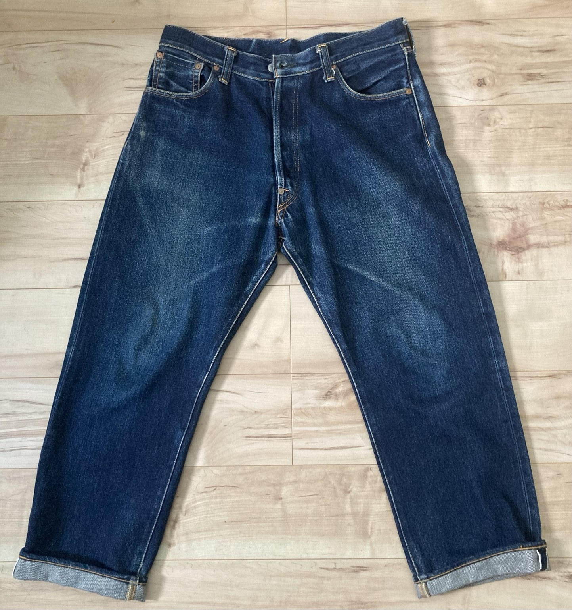
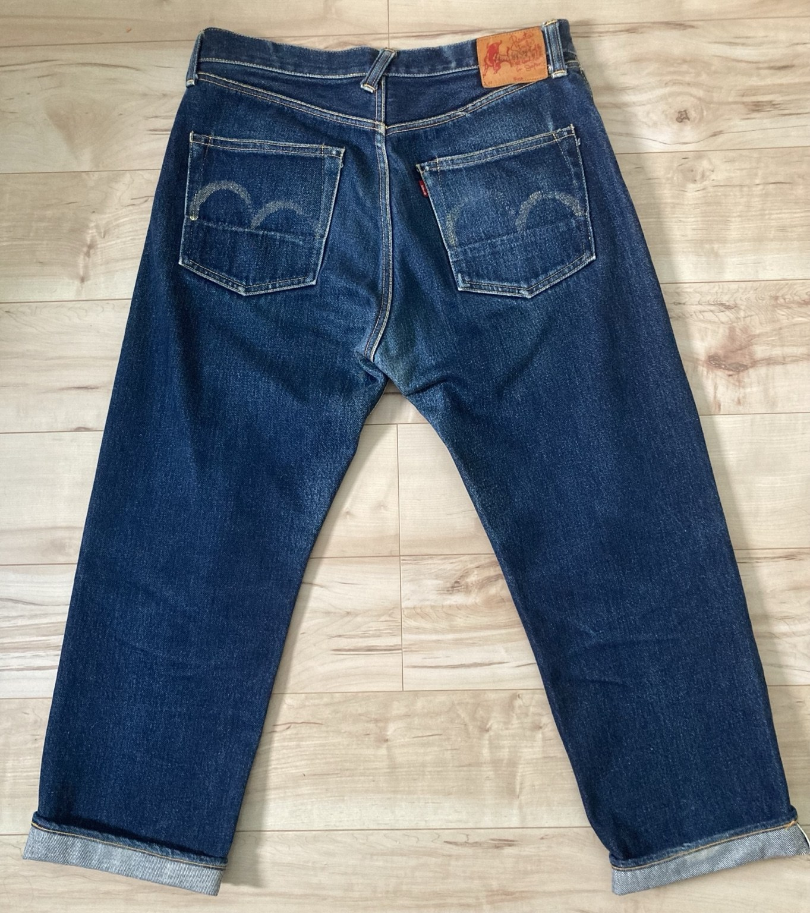
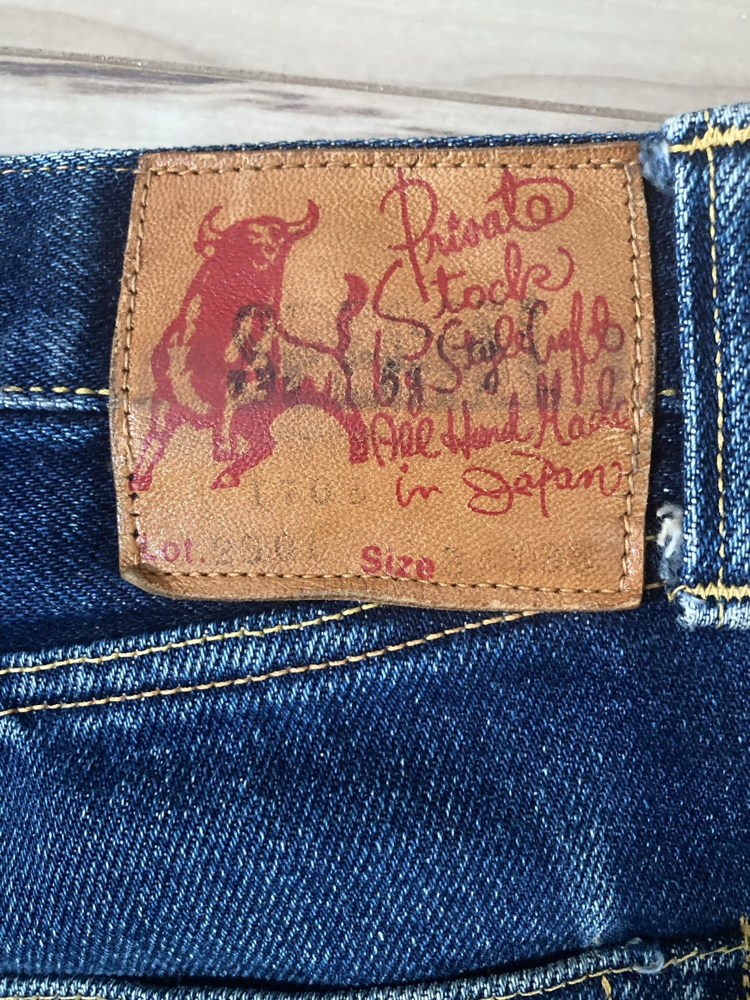

Front

DENIM FADE LAB / EARLY EVIS
初期EVISの実物を、パッチ・タブ・色落ちとともに記録します。
今回の個体は、バッファローパッチとUなしの「EVIS」表記が特徴。初期EVISを知るための実物資料として、全体写真とパッチのアップを掲載しています。
年代は写真だけで断定せず、パッチ、タブ、縫製、生地など確認できるディテールを中心に記録します。



写真をクリックすると拡大表示できます。